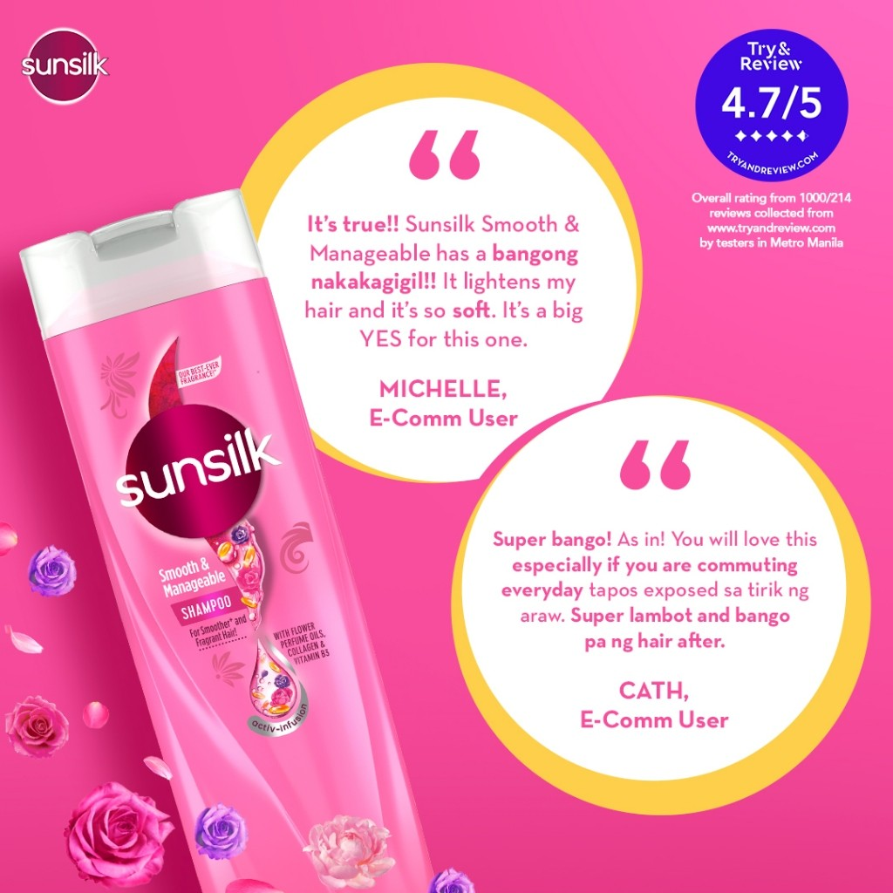
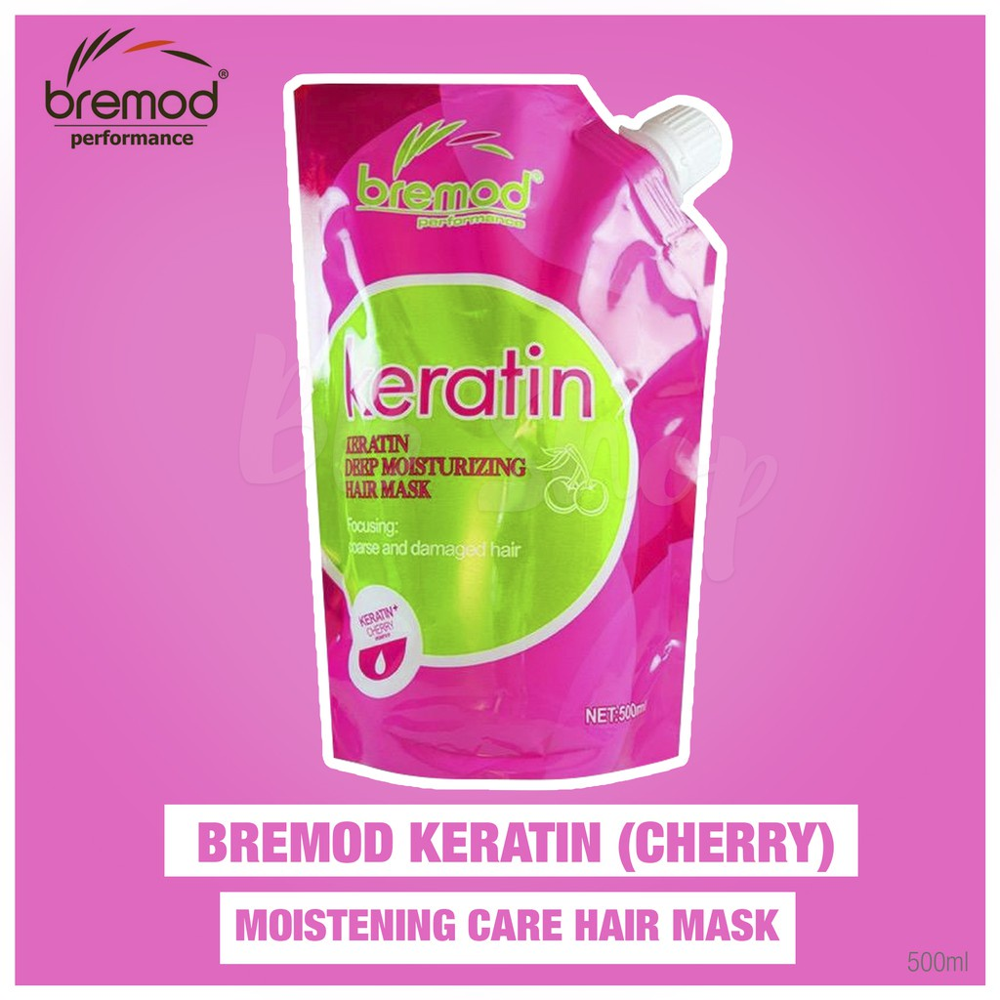
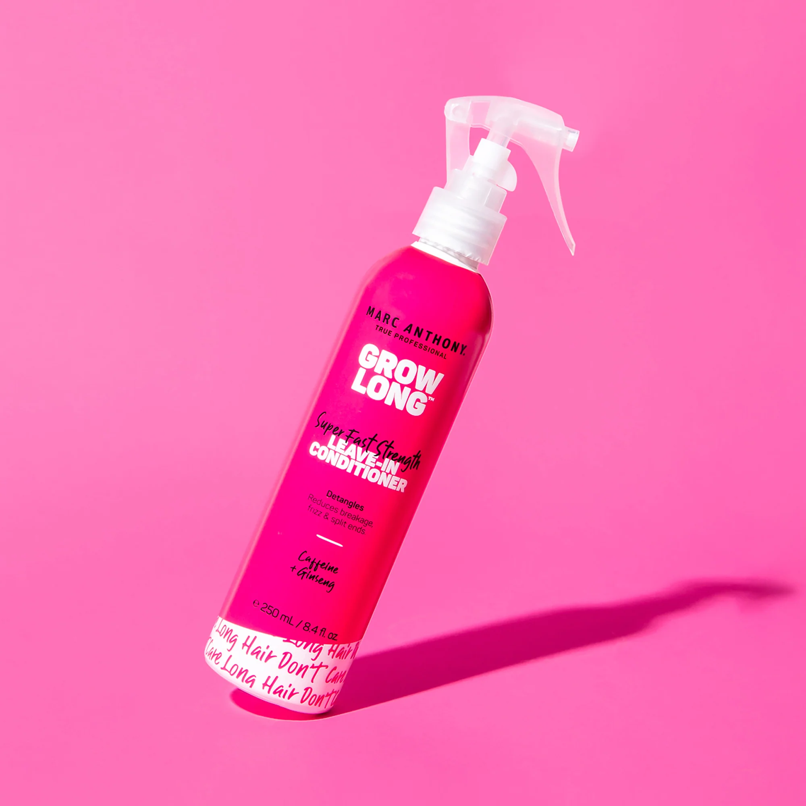

-Hair Products-




Hair Live In Conditioner
Mark Anthony
Leave-in conditioner is formulated to add moisture to the hair without weighing it down. Since it doesn't need to be rinsed out, it nourishes, strengthens, and protects the hair as you go about your daily routine while leaving it more manageable and easier to style.